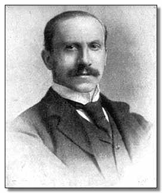

|  |
Portait of Alfred Milner |
The Right Honourable Alfred Milner, 1st Viscount Milner, KG, GCB, GCMG, PC (March 23, 1854 – May 13, 1925), was British statesman and colonial administrator. He was noted for Milner's Kindergarten, a group of young men he mentored and who in some cases became important figures in running the British Empire. Early life and education
He was born at Bonn, the only son of Charles Milner, M.D., whose wife was a daughter of Major-General Ready, sometime governor of the Isle of Man.
His paternal grandfather, an Englishman, settled in Germany and married a German lady; and their son, Charles Milner, practised as a physician in London and became later Reader in English at Tübingen University. Alfred Milner was educated first at Tübingen, then at King's College, London, and under Jowett as a scholar of Balliol College, Oxford, from 1872 to 1876. He graduated in 1877, with a first class in classics, having won the Hertford, Craven, Eldon and Derby scholarships, and was elected to a fellowship of New College.
At Oxford he formed a close friendship with Arnold Toynbee, and was associated with his schemes of social work; and subsequently he wrote a tribute to his friend, Arnold Toynbee: a Reminiscence (1895).
Journalism and politics
In 1881 he was called to the bar at the Inner Temple and joined the staff of the Pall Mall Gazette under John Morley, becoming assistant editor under W. T. Stead.
In 1885 he abandoned journalism, and became Liberal candidate for the Harrow division of Middlesex at the general election, but was defeated. He acted as private secretary to Mr (afterwards Lord) Goschen, and in 1887, when Goschen became chancellor of the exchequer, was appointed his principal private secretary.
In Egypt
It was by Goschen's influence that in 1889 he was made under-secretary of finance in Egypt. He remained in Egypt four years, his period of office coinciding with the first great reforms, after the danger of bankruptcy had been avoided. Milner returned to England in 1892, and was appointed chairman of the Board of Inland Revenue, being made C.B. in 1894 and K.C.B. in 1895.
Shortly after his return to England he published his England in Egypt, which at once became the authoritative account of the work done since the British occupation.
In South Africa
Sir Alfred Milner remained at the Board of Inland Revenue until 1897. He was regarded as one of the clearest-headed and most judicious officials in the British service, and his position as a man of moderate Liberal views, who had been so closely associated with Goschen at the Treasury, Cromer in Egypt and Hicks-Beach (Lord St Aldwyn) and Sir W. Harcourt while at the Inland Revenue, marked him out as one in whom all parties might have confidence. The moment for testing his capacity in the highest degree had now come.
In April Lord Rosmead resigned his posts of High Commissioner for Southern Africa and Governor of Cape Colony. The situation resulting from the Jameson raid was one of the greatest delicacy and difficulty, and Mr Chamberlain, now colonial secretary, selected Milner as Lord Rosmead's successor. The choice was cordially approved by the leaders of the Liberal party, and warmly recognized at a farewell dinner presided over by Mr Asquith (March 28, 1897). The appointment was avowedly made in order that an acceptable British statesman, in whom public confidence was reposed, might go to South Africa to consider all the circumstances, and to formulate a policy which should combine the upholding of British interests with the attempt to deal justly with the Transvaal and Orange Free State governments.
Sir Alfred Milner reached the Cape in May 1897, and after the difficulties with President Kruger over the Aliens' Law had been patched up he was free by August to make himself personally acquainted with the country and peoples before deciding on the lines of policy to be adopted. Between August 1897 and May 1898 he travelled through Cape Colony, the Bechuanaland Protectorate, Rhodesia and Basutoland. The better to understand the point of view of the Cape Dutch and the burghers of the Transvaal and Orange Free State, Milner also during this period learned both Dutch and the South African "Taal." He came to the conclusion that there could be no hope of peace and progress in South Africa while there remained the "permanent subjection of British to Dutch in one of the Republics."
He also realized — as was shown by the triumphant re-election of Mr Kruger to the presidency of the Transvaal in February 1898 — that the Pretoria government would never on its own initiative redress the grievances of the "Uitlanders." In a speech delivered at Graaff Reinet, a Bond stronghold, on March 3, 1898, he made it clear ihat he was determined to secure freedom and equality for the British subjects in the Transvaal, and he urged the Dutch colonists to induce the Pretoria government to assimilate its institutions, and the temper and spirit of its administration, to those of the free communities of South Africa. The effect of this pronouncement was great, and it alarmed the Afrikanders, who at this time viewed with apprehension the virtual resumption by Cecil Rhodes of his leadership of the Progressive (British) party at the Cape. That Milner had good grounds for his view of the situation is shown in a letter written (March 11) by Mr JX Merriman to President Steyn of the Free State: "The greatest danger (wrote Mr Merriman) lies in the attitude of President Kruger and his vain hope of building up a State on a foundation of a narrow unenlightened minority, and his obstinate rejection of all prospect of using the materials which lie ready to his hand to establish a true republic on a broad liberal basis. Such a state of affairs cannot last. It must break down from inherent rottenness."
Though this was recognized by the more far-seeing of the Bond leaders, they were ready to support Kruger, whether or not he granted reforms, and they sought to make Milner's position impossible. His difficulties were increased when at the general election in Cape Colony the Bond obtained a majority. Acting strictly in a constitutional manner, Milner thereupon (October 1898) called upon Mr WP Schreiner to form a ministry, though aware that such a ministry would be opposed to any direct intervention of Great Britain in the Transvaal. Convinced that the existing state of affairs, if continued, would end in the loss of South Africa by Britain, Milner came to England in November 1898. He returned to the Cape in February 1899 fully assured of the support of Mr Chamberlain, though the government still clung to the hope that the moderate section of the Cape and Free State Dutch would induce Kruger to deal justly with the Uitlanders. He found the situation more critical than when he had left, ten weeks previously. Johannesburg was in a ferment, while General Sir William Butler, who acted as high commissioner in Milner's absence, had allowed it to be seen that he did not take a favorable view of the Uitlander grievances.
On May 4 Milner penned a memorable despatch to the Colonial Office, in which he insisted that the remedy for the unrest in the Transvaal was to strike at the root of the evil the political impotence of the injured. "It may seem a paradox," he wrote, "but it is true that the only way for protecting our subjects is to help them to cease to be our subjects." The policy of leaving things alone only led from bad to worse, and "the case for intervention is overwhelming."
Milner felt that only the enfranchisement of the Uitlanders in the Transvaal would give stability to the South African situation. He had not based his case against the Transvaal on the letter of the Conventions, and regarded the employment of the word "suzerainty" merely as an "etymological question," but he realized keenly that the spectacle of thousands of British subjects in the Transvaal in the condition of "helots" (as he expressed it) was undermining the prestige of Great Britain throughout South Africa, and he called for "some striking proof" of the intention of the British government not to be ousted from its predominant position. This despatch was telegraphed to London, and was intended for immediate publication; but it was kept private for a time by the home government.
Its tenor was known, however, to the leading politicians at the Cape, and at the instance of JH Hofmeyr a conference was held (May 31 – June 5) at Bloemfontein between the high commissioner and the president of the Transvaal. Milner then made the enactment by the Transvaal of a franchise law which would at once give the Johannesburgers a share in the government of the country his main, and practically his only, demand. The conference ended without any agreement being reached, and the diplomatic discussion which followed gradually became more and more contentious.
When war broke out, October 1899, Milner rendered the military authorities "unfailing support and wise counsels," being, in Lord Roberts's phrase "one whose courage never faltered."
In February 1901 he was called upon to undertake the administration of the two Boer states, both now annexed to the British Empire, though the war was still in progress. He thereupon resigned the governorship of Cape Colony, while retaining the post of high commissioner. The work of reconstructing the civil administration in the Transvaal and Orange River Colony could only be carried on to a limited extent while operations continued in the field. Milner therefore returned to England to spend a "hard-begged holiday," which was, however, mainly occupied in work at the Colonial Office. He reached London on May 24, 1901, had an audience with the king on the same day, was made a G.C.B. and privy councillor, and was raised to the peerage with the title of Baron Milner of St James's and Cape Town. Speaking next day at a luncheon given in his honor, answering critics who alleged that with more time and patience on the part of Great Britain war might have been avoided, he asserted that what they were asked to "conciliate" was "panoplied hatred, insensate ambition, invincible ignorance."
The peace
Meanwhile the diplomacy of 1899 and the conduct of the war had caused a great change in the attitude of the Liberal party in England towards Lord Milner, whom Leonard Courtney even characterized as "a lost mind." A violent agitation for his recall, in which Sir Henry Campbell-Bannerman joined, was organized, but without success, and in August he returned to South Africa, where he plunged into the herculean task of remodelling the administration. In the negotiations for peace he was associated with Lord Kitchener, and the terms of surrender, signed at Pretoria on the 31st of May 1902, were drafted by him. In recognition of his services he was, on the isth of July, made a viscount.
Immediately following the conclusion of peace Milner published (June 21) the Letters Patent establishing the system of crown colony government in the Transvaal and Orange River colonies, and exchanging his title of administrator to that of governor.
The reconstructive work necessary after the ravages of the war was enormous. He provided a steady revenue by the levying of a tax of 10% on the annual net produce of the gold mines, and devoted special attention to the repatriation of the Boers, land settlement by British colonists, education, justice, the constabulary, and the development of railways.
While this work of reconstruction was in progress domestic politics in England were convulsed by the tariff reform movement and Mr Chamberlain's resignation. Milner, who was then spending a brief holiday in Europe, was urged by Mr Balfour to take the vacant post of secretary of state for the colonies. This offer he declined (October 1, 1903), considering it more important to complete his work in South Africa, where economic depression was becoming pronounced.
He was back in Johannesburg in December 1903, and had to consider the crisis in the gold-mining industry caused by the shortage of native labor. Reluctantly he agreed, with the assent of the home government, to the proposal of the mineowners to import Chinese coolies on. a three years contract, the first batch of Chinese reaching the Rand in June 1904.
In the latter part of 1904 and the early months of 1905 Lord Milner was engaged on the elaboration of a scheme to provide the Transvaal with a system of representative government, a half-way house between crown colony administration and that ul self-government. Letters patent providing for representative government were issued on March 31, 1905. For some time he had suffered in health from the incessant strain of work, and he determined to retire.
He left Pretoria on April 2 and sailed for Europe on the following day. Speaking at Johannesburg on the eve of his departure, he recommended to all concerned the promotion of the material prosperity of the country and the treatment of Dutch and British on an absolute equality. Having referred to his share in the war, he added: "What I should prefer to be remembered by is a tremendous effort subsequent to the war not only to repair the ravages of that calamity but to re-start the colonies on a higher plane of civilization than they have ever previously attained."
He left South Africa while the economic crisis was still acute and at a time when the voice of the critic was audible everywhere; but, in the words of the colonial secretary (Mr Alfred Lyttelton) he had in the eight eventful years of his administration laid deep and strong the foundation upon. which a united South Africa would arise to become one of the great states of the empire. On his return home his university honored him with the honorary degree of D.C.L.
Experience in South Africa had shown him that underlying the difficulties of the situation there was the wider problem of imperial unity. In his farewell speech at Johannesburg he concluded with a reference to the subject. 'When we who call ourselves Imperialists talk of the British Empire we think of a group of states bound, not in an alliancef or alliances can be made and unmade but in a permanent organic union. Of such a union the dominions of the sovereign as they exist to-day are only the raw material.' This thesis he further developed in a magazine article written in view of the colonial conference held in London in 1907. He advocated the creation of a permanent deliberative imperial council, and favored preferential trade relations between. the United Kingdom and the other members of the empire; and in later years he took an active part in advocating the cause of tariff reform and colonial preference.
In 1910 he became a founder of The Round Table — A Quarterly Review of the Politics of the British Empire, which helped to promote the cause of imperial federation.
Censure motion
In March 1906 a motion censuring Lord Milner for an infraction of the Chinese labor ordinance, in not forbidding light corporal punishment of coolies for minor offences in lieu of imprisonment, was moved by a Radical member of the House of Commons. On behalf of the Liberal government an amendment was moved, stating that 'This House, while recording its condemnation of the flogging of Chinese coolies in breach of the law, desires, in the interests of peace and conciliation in South Africa, to refrain from passing censure upon individuals'. The amendment was carried by 355 votes to 135. As a result of this left-handed censure, a counter-demonstration was organized, led by Sir Bartle Frere, and a public address, signed by over 370,000 persons, was presented to Lord Milner expressing high appreciation of the services rendered by him in Africa to the crown and empire.
Businessman
Upon his return from South Africa, Viscount Milner occupied himself mainly with business interests in London, becoming chairman of the Rio Tinto Zinc mining company, though he remained active in the campaign for imperial free trade. In the period 1909 to 1911 he was a strong opponent of the budget of David Lloyd George and the subsequent attempt of the Liberal government to curb the powers of the House of Lords.
World War One
Since Milner was the only Briton who had experience in civil direction of a war, Lloyd George turned to him in December, 1916 when he formed his national government. He was made a member of the four person War Cabinet. After Lloyd George, Milner had the greatest say in the civilian conduct of the war.
He was an earnest advocate of inter-allied cooperation, attending an Allied conference in St. Petersburg in February 1917. He was in France as representative of the British cabinet in March, 1918 when the Germans launched their great offensive, and he was instrumental in getting General Ferdinand Foch appointed as Allied Generalissimo on March 26, 1918.
Lord Milner was appointed Secretary of State for War on April 19, 1918 and presided over the army council for the remainder of the war. He was appointed Colonial Secretary after the Khaki Election of 1918 and in thatcapacity attended the Paris Peace Conference in 1919 and was one of the signatories of the Treaty of Versailles.
Egypt Again
His last great public service was, after serious rioting broke out, a mission to Egypt from December, 1919 to March, 1920 to make recommendations on British-Egyptian relations. His report formed the basis of a settlement which lasted for a number of years.
Last Years
Lord Milner retired in February of 1921. In 1921, Milner married Lady Violet Georgina Gascoyne-Cecil, widow of Lord Edward Cecil. He remained active in the work of the Rhodes Trust and accepted, at the behest of Prime Minister Stanley Baldwin, chairmanship of a committee to examine a new imperial preference tariff. His work proved abortive when Baldwin lost the subsequent election.
Milner died in England on May 13, 1923 of sleeping sickness soon after returning from South Africa. His viscountcy, lacking suitable heirs, died with him.
Credo
Found among Milner's papers was his Credo, which was soon published to great acclaim.
References
|
|